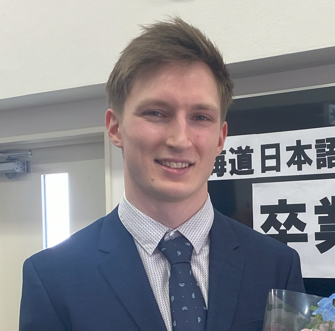

2025年 5月 22日現在
| ふりがな | ノーランド・ヨハン・ルーカス |
| 氏名 | Norlund Johan Lukas |

| 国籍 | スウェーデン | 生年月日（年齢） | 1997年 11月 13日 （満 27歳） |
| ふりがな | ほっかいどうえにわしめぐみのさとみ |
| 現在所 |
〒061-1376 北海道恵庭市恵み野里美 |
| 性別 | 男 |
| 電話 |
| 070 2314 2840 |
| メールアドレス |
| johan.lukas@hotmail.com |
| 年 | 月 | 学歴・職歴 |
| 学歴 | ||
| 2014 | 8 | （スウェーデン）Baldergymnasiet 高校 （工学専攻）入学 |
| 2017 | 6 | Baldergymnasiet 高校 卒業 |
| 2019 | 9 | （日本）北海道日本語学院札幌本校 入学 （1年コース） |
| 2022 | 4 | 同校 再入学 （2年目進学） |
| 2023 | 3 | 同校 卒業 |
| 2023 | 4 | （日本）北海道ハイテクノロジー専門学校 プログラマー専攻 入学 |
| 職歴 | ||
| 2017 | 6 | Norra Skog（スウェーデン）材木置き場 工員 |
| 2020 | 10 | 再入社 (同上) 同上 |
| 2022 | 5 | Churassco Bower BLOGAD レストラン（日本）アルバイト（料理・ウエイター） |
| 2024 | 5~ | 旅行綜研東日本株式会社（日本）アルバイト（荷物、下船・搭乗の介助） |
| 自己㏚ |
|
幼い頃から、コンピューターやインターネット、ゲームやガジェットに強い興味を持っていました。
そのため、高校ではITを専攻し、初めてプログラミングに触れました。HTML、PHP、C#などを学び、
学校の課題にも全力で取り組みました。授業以外にも、家で何時間も勉強し、自分のWebサイトを作るなど、
自然と技術を深めるようになりました。クラスの中でも成績は上位で、IT分野への強い関心と相性を実感しました。
高校卒業後は、地元の製材所に就職しました。厳しい寒さの中、重労働と早朝勤務が続く環境でしたが、 チームワークを大切にし、仲間と支え合いながら働きました。この経験を通して、「責任を持って働くこと」 や「体力・精神力の大切さ」を学びました。しかし、もっと自分の可能性を広げ、スウェーデンと日本を 結ぶような大きな挑戦をしたいと思い、長期的に日本でITを学ぶことを決意しました。 最初の一歩として、工場を一時休職し、東京で1ヶ月間の日本語短期コースに参加しました。日本に到着したとき、 文化や生活スタイルの違いに戸惑い、言葉も分からず、コンビニでの買い物や電車移動すらも一苦労でした。 それでもこの経験は、自分の視野を大きく広げてくれ、「本気で日本で学びたい」と思う大きなきっかけになりました。 その後、札幌にある語学学校で約1年半日本語を学び、現在は北海道ハイテクノロジー専門学校 ITメディア学科の3年生として、 専門的なIT技術を習得しています。Python、Java、JavaScript、C、C++、C#、PHP、HTML/CSS、 SQLなどのプログラミング言語を学びました。また、Linux環境での開発やサーバー構築、システム開発も経験しています。 授業では、チーム開発でWebアプリケーションを作成したり、データベース設計やゲーム開発にも取り組んできました。 特に、MySQLを用いたデータベースシステムの構築と、PythonによるFlaskアプリの開発プロジェクトでは、 バックエンドとフロントエンドの両面を担当し、チームから信頼される存在になれたことが自信につながりました。 私は異文化の中で生活し、学び、挑戦を続けてきた経験があります。それに加え、勤勉で粘り強く、体力にも自信があります。 これらの経験を活かし、御社のIT開発チームの一員として、技術と情熱で貢献したいと考えています。 |
| 年 | 月 | ポートフォリオ・制作歴 |
| 2024 | 2 | ITパスポート試験勉強アプリ （Python Flask, HTML, CSS）個人 |
| 2024 | 9 | 英語単語カードアプリ （Python Flask, HTML, CSS, MySQL）チーム |
| 2024 | 9 | 領収書読み込みシステム （Python Tkinter, EasyOCR, Matplotlib, OpenCV）チーム |
| 2024 | 9 | ひよこゲーム （Unity, C#）個人 |
| 2025 | 2 | 基本情報試験勉強アプリ （Python Flask, HTML, CSS, MySQL, JavaScript）チーム |
| 2025 | 2 | 五目並べAI （Python Tinkter, Keras, Numpy）チーム |
| 進行中 | ブログ制作ツール（Python Flask, JavaScript, HTML, CSS, MySQL）個人 | |
| 進行中 | WEBサーバープロジェクト （Java, JavaScript, PHP, MySQL, HTML, CSS）チーム |